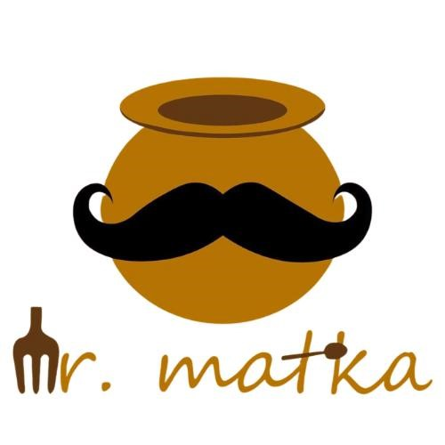
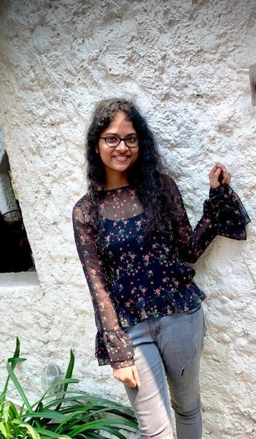
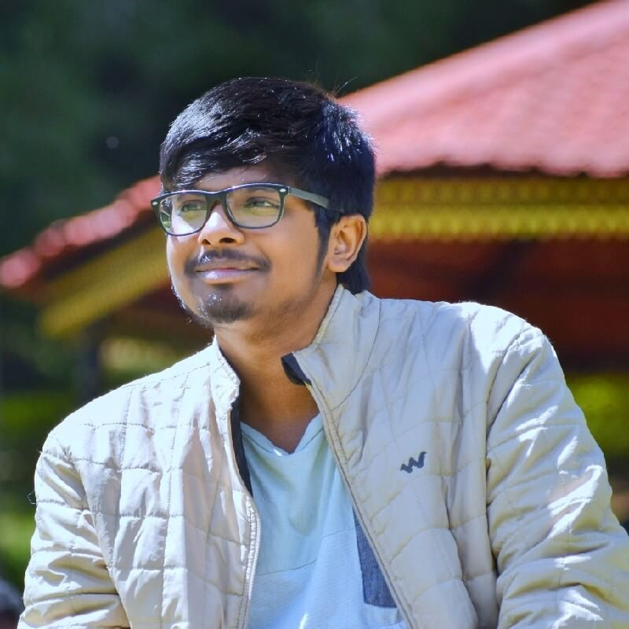
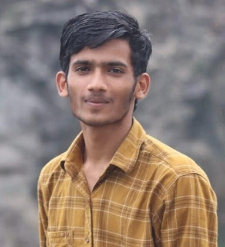
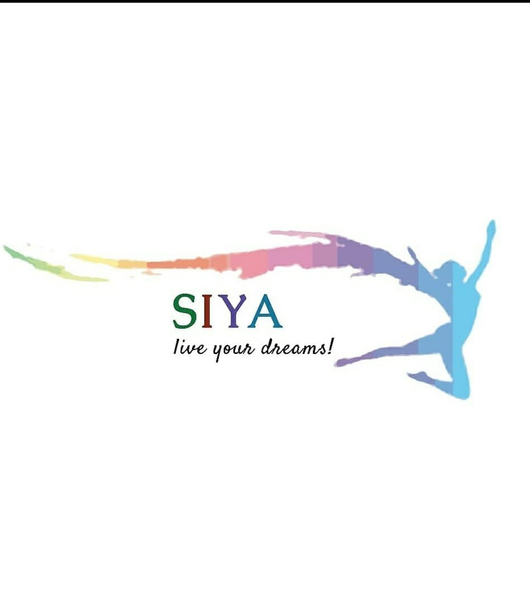
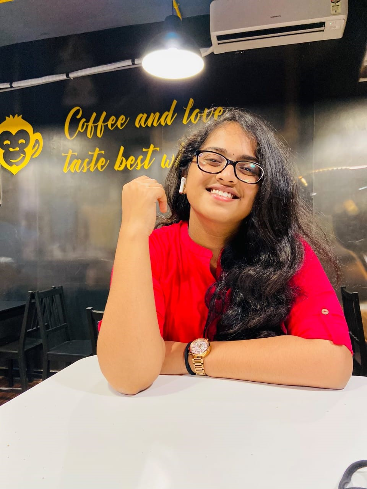

Skill Battle
What SkillBattle does?
Priscilla Prathiba, CEO, SkillBattle
4th year ECE, 18241A04T3
Skill Battle is a platform that connects art enthusiasts and professionals
across the globe. The main aim of Skill Battle is the transformation of a person's hobby into a
career. They have a large number of specialized art educators in distinct art forms, where they
can exchange their ideas and experience. In SkillBattle, one can participate in different
competitions and connect with artists from various communities. It is known for the attractive
opportunities that it offers at affordable prices.
Reason behind
My inspiration for Skillbattle is to create a skill based tomorrow, by equipping people to learn
and work with freedom. We wanted to provide art education, art career mentorship and finally
equip people to learn and work on what they love to do. Our motto involves creating skill based
jobs for our coming generation.

MR. MATKA
What Mr.Matka do??

Thota Aamuktha Sai Sree, CEO, Mr.Matka
3RD Year, ECE, 19241A0452
Mr. Matka is a curated food brand, that aims towards the reduction of
environmental pollution and preparing delicious food at the same time. The brand believes in
providing the food that is of unique taste. The food at Mr. Matka is prepared with utmost care
using natural earthen cutlery. It essentially aims towards a healthy environment practice with a
touch of tradition which enhances the taste and quality of the food.
Reason behind
The mother earth is divine & it's our responsibility to conserve it. Keeping the same in mind,
I started to create something innovative and also promote clean & green environment. It's the
taste in every bit, you get to feel our tradition and the love we serve. Contributing to a
fortunate future generation in our own way is our uniqueness which intensified my passion to
build this.
RIVACH
What Rivach do?

Rishwanth Perumandla, CEO and Product Designer, Rivach

Nagula Vamshi Raj, Co-founder and Mobile Developer, Rivach
Rivach is a B2B product services startup helping founders and entrepreneurs
to make their product ideas into digital realities. Rivach has been started by student freelancers
to increase the scope of being freelance developers of building a profitable product agency as a team.
Solving real time problems as a team has much more impact on the product than solving as solo
freelancers. Rivach now is a 8 member team of highly skilled developers and designers experimenting &
building all phases of tech products.
Reason behind
I have always wanted to try different things and having my startup was one among them and because I
had a keen interest in programming and have always wanted to put everything I have learned into
some real-world application rather than just some theoretical problems. That's when we have decided
to start Rivach which provides technical solutions to other startups to scale their business. We aim
to provide digital support to as many startups and businesses as possible.-Vamshi
Solving real-time tech market problems by working on product strategy, design and development are like
playing multiplayer games for me. Doing that as a team has driven me to start Rivach from being a
Freelancer working individually.-Rishwanth

SIYA EVENT PLANNERS
What Siya does?

Reethika Rao, CEO, Siya Event Planner
4th year, EEE
Asst. Co-ordinator, Public Relations
There is this stigma in the society that event planning belongs only to the rich communities but we, Siya event planners are here to break that stigma and we provide quite affordable services. Our services include decor, catering, photography, live music, cake delivery, midnight surprises, etc and all our packages can be customized. We make the whole flow of planning an event easier and burden less to our customer!
Reason behind
Siya event planners make your birthdays, anniversaries and all other special occasions much more unique and memorable. Our services are now available at Warangal, Hyderabad, and Karimnagar. We are passionate and take each one of the events personally and find creative ways to deliver our best to the clients